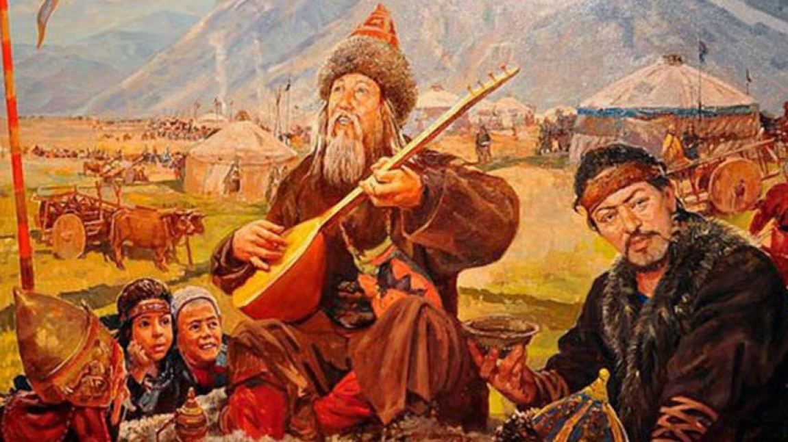

Hazırladığımız bu web sitesinde Dede Korkut'un önemli eserlerinden biri olan Dirse Han Oğlu Boğaç Han hikayesini "Hikaye" bölümünden okuyabilir, okurken bilmediğin sözcüklerin, deyimlerin veya atasözlerin anlamına "Sözlük" bölümünden bakabilir, Dede Korkut ve Dede Korkut Hikayeleri hakkında bilgilere "Tarih" bölümünden ulaşabilir, Bu hikayenin geçtiği bölgeyi "Harita" bölümünden öğrenebilir ve her şeyi anladığını düşündüğün zaman "Oyunlar" bölümündeki mini testlerle kendini test edebilirsin. İyi Eğlenceler!
